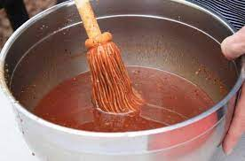

Mop Sauce

Description:
We've all heard of BBQ sauce, but a mop brings a Carolina tang.
Ingredients / Tools:
- 1 cup distilled vinegar
- 1/4 cup ketchup
- 1/4 cup apple juice
- 1 tsp hot sauce
- 3 tbsp light brown sugar
- 1/2 tbsp coarse salt
- 1 tsp crushed red pepper
- 1 tsp finely ground black pepper
Instructions
- Combine in large bowl and mix. Store overnight.